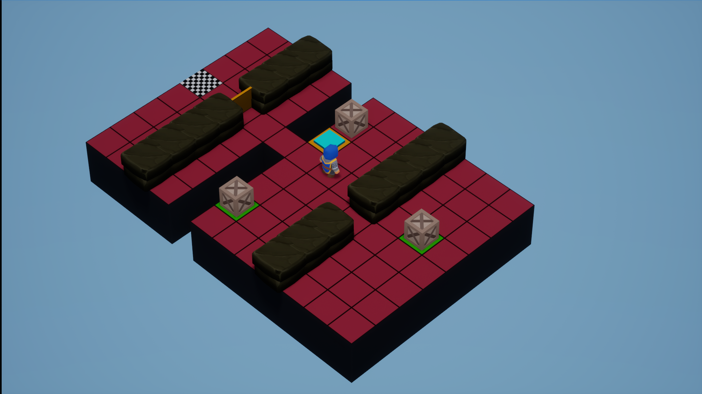

02 / Gameplay + level design
Tile-Based Puzzle Game
I decided to challenge myself by adding new mechanics and levels to an existing puzzle game. I limited the project to three one-week sprints.

The project
What I set out to do
I chose a game that already had most of its mechanics. I added mechanics to work alongside those original systems, along with three short levels.
I worked in sprints so I could focus on specific objectives and finish those before moving on to another mechanic. I used ClickUp to set tasks and deadlines.
The starting game already had its core mechanics. The work shown here focuses on the mechanics and levels I added. The third-party assets were provided by my college or purchased for the project.
My contributions
- Added mechanics and designed three new puzzle levels.
- Used Blueprint Interfaces and Event Dispatchers for communication between gameplay objects, including pressure plates and doors.
- Animated doors and pressure plates with Timelines and linear interpolation.
- Worked on fuse-box door control and movable-box interactions.
- Introduced boxes and doors across the first two levels before using them in a more difficult third level.
- Used peer feedback to revise level pacing and add clearer feedback for players.
- Organized objectives and deadlines in ClickUp across three one-week sprints.
- Simplified parts of the Blueprint logic using Boolean conditions and fewer unnecessary variables.
Gameplay systems
Building the mechanics
Blueprint communication
I used Blueprint Interfaces and Event Dispatchers to send messages between the pressure plates and the doors they could open.
Fuse boxes & movable boxes
I worked on fuse-box interactions that control doors and on movable-box interactions used to solve the puzzles.
Animating the doors and pressure plates
I wanted the doors and pressure plates to move. I thought about making them disappear, but that felt like a shortcut. I used Timelines and LERPs to animate them instead.
Boolean logic
Before this project, I was not comfortable with the Not Boolean node or when to use it. That led me to make longer Blueprint graphs than I needed. I became more comfortable using Boolean logic in this project and was able to simplify parts of the graphs.
Level design
How I planned the levels
I was intentional about how I made these three levels. I wanted the player to become comfortable with boxes and doors before trying a more difficult puzzle.
Level 1: Moving boxes
In the first level, I introduced boxes that the player can move. The yellow boxes keep moving until they hit a wall.
Level 2: Pressure plates and doors
In the second level, I reinforced the lesson about moving boxes and introduced pressure plates and doors. The player can push boxes onto the plates to open the doors.
Level 3: A more difficult puzzle
After two levels with boxes and doors, I challenged the player with a more difficult level using those mechanics together.
Project gallery
These screenshots show the puzzle layouts, boxes, pressure plates, and doors.



Project retrospective
What I learned
Peer feedback
I reviewed feedback from peers and made changes to the level pacing. I also added more feedback for players.
Understanding the original code
I did not take enough time to get comfortable with the original code. This made it take longer to build my additions. Next time, I want to understand the starting systems before I add to them.
Where I stored variables
I stored a variable used for Blueprint communication in an instantiated Blueprint. When it did not behave as I expected, I realized I needed to think more carefully about where it belonged.
Unnecessary variables
I sometimes added variables when there was a simpler solution. In one door Blueprint, a Boolean condition worked better than the extra variable I had added.
Commenting on my Blueprints
I left long sections of Blueprint logic without comments and went back later to add them. That would have made it difficult for another developer to understand what I was trying to do. In the future, I want to comment as I work instead of leaving it until the end.
More time for levels
I am happy with the levels in this project, but all three can be completed quickly. I think I should have planned a separate sprint for more levels. In the future, I would like to give level design more time.